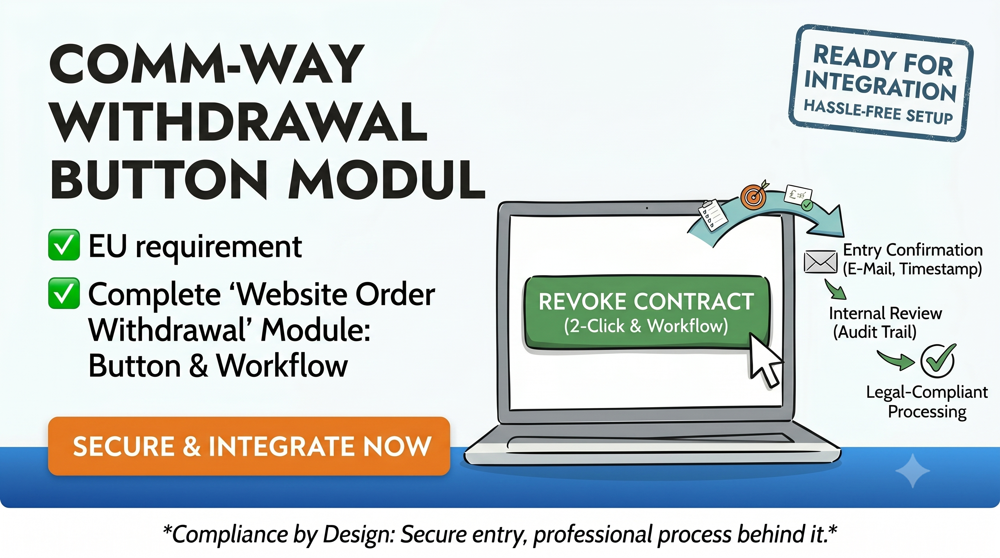
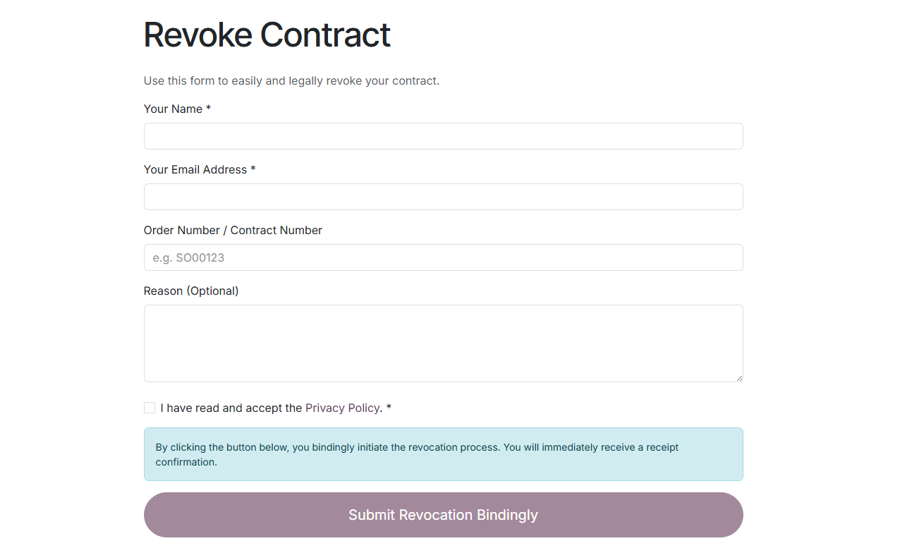
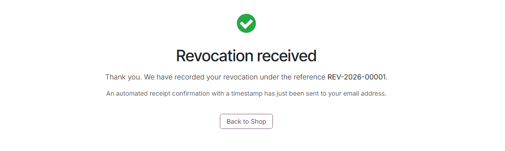
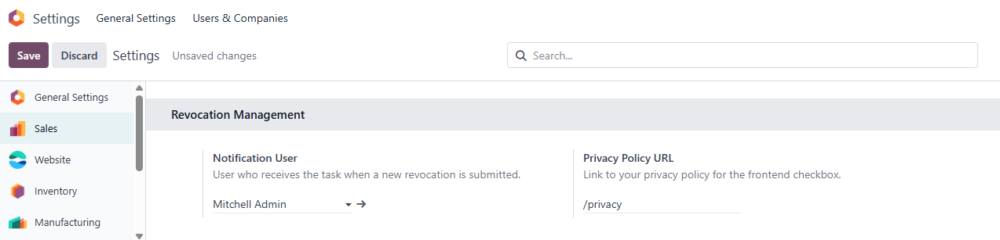
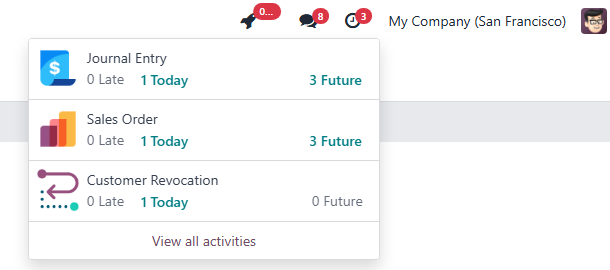
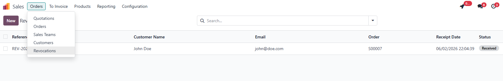
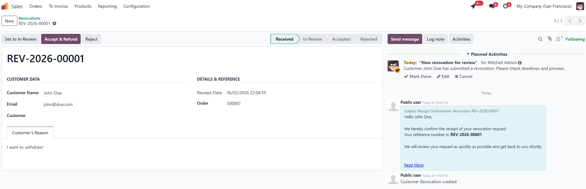

EU Compliance Pack
Website Order WithdrawalProtect your online business from heavy legal compliance fines and structural claims. Give customers a fully automated 1-click legal solution to submit official contract cancellations or order withdrawals directly in your Odoo storefront path.
✓ Native Multi-Website
✓ Guest Checkout Support
|
 |
100% Legal SafeguardsFully guarantees absolute adherence to strict European Consumer Rights Directives governing online trade cancellations. |
Automated PipelinesGenerates standalone records inside specialized views, schedules tracking deadlines, and structures processing workflows. |
Protected SecurityIsolates customer data utilizing robust record rule security access control layers (ACL) protecting guest transactions. |
Integrates a custom legal portal subpath (/shop/revocation) accessible anywhere.
The form features a built-in privacy policy checkbox with a dynamic "Submit" button that automatically unlocks only when all required legal fields are filled out, preventing incomplete submissions. Registered customer accounts are automatically paired, while guest purchases can safely log a direct request.

Upon submission, the customer receives an instant on-screen confirmation featuring a unique, system-generated tracking reference. Simultaneously, a timestamped automated receipt is dispatched to their email, fulfilling EU documentation requirements.

Configure the entire module directly from the core Sales app settings. Assign a dedicated Notification User to ensure new revocation requests are automatically routed to the correct agent's dashboard. You can also define an explicit Privacy Policy URL to dynamically enforce GDPR/DSGVO compliance on the frontend form.

Every incoming revocation creates a structured record in the backend and automatically schedules an activity (Next Activity) for the designated Notification User. All automated email notifications and customer replies are directly tracked within the record's chatter, ensuring complete transparency and streamlined communication.

Keep your customer service team efficient with a dedicated list view directly within the Sales app. All incoming revocations are neatly organized, allowing you to filter by status (Received, In Review, Accepted, Rejected), search by reference, and process requests in bulk. The clear overview ensures no legal deadline is ever missed.

Inside the detail view, your team has all necessary customer data, order references, and submitted reasons available at a glance. Easily transition the status through the integrated progress bar and utilize the smart action buttons to instantly accept or reject the revocation, triggering the appropriate automated email workflows directly from the interface.
💡 Smart Collaboration: When you assign the revocation request to an internal user or link it to a specific customer record, Odoo automatically adds them as a Follower to the document thread. This ensures that any subsequent updates, comments, or customer replies in the chatter are seamlessly routed to their personal inbox.

| Multi-Language Ready | Bundled with complete professional translation packages for English (Base Code) as well as German (de_DE) store environments. |
| Structural Engineering | Zero dangerous core database injection patches. Extends clean framework dependencies via base, website, sale_management, and mail tracking controllers. |
| OPL-1 Protected Asset | Released under the standard Odoo Proprietary License protecting distribution rights. Free from activation bottlenecks or localized hardware tokens lock-ins. |
💡 Commercial Tip: European trade associations frequently penalize webstores lacking an explict automated withdrawal path. Installing this extension provides complete operational security and shields you from legal vulnerabilities.
|
Professional E-Commerce System Integrations & Custom Enterprise Solutions. We build reliable corporate extensions to scale your Odoo infrastructure flawlessly. Contact Our Support Team ➔ |